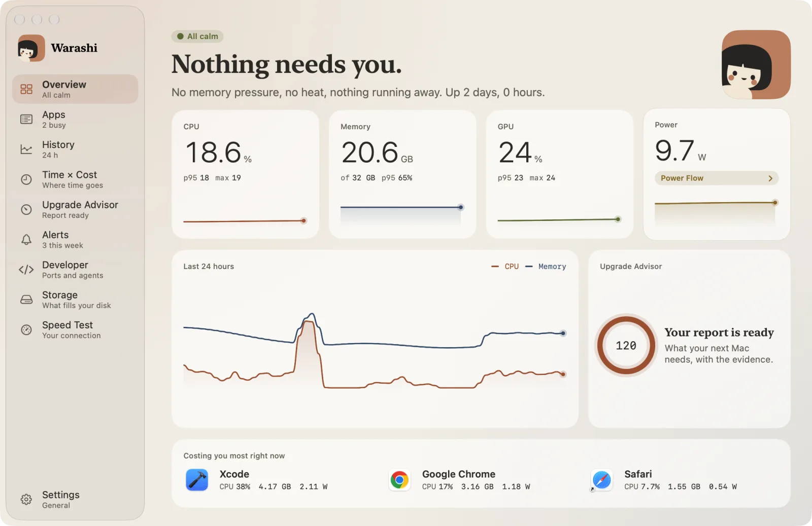
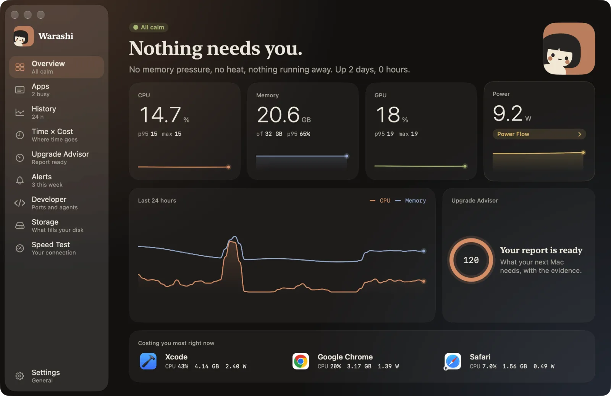

W oknie Warashi pokazuje wszystko, co wie. Otwiera się na środku ekranu, z którego korzystasz.
- Otwórz okno
Naciśnij ⌘O w oknie paska menu, kliknij Otwórz Warashi w oknie paska menu lub kliknij otwarte wycięcie. Okno otwiera się także po uruchomieniu Warashi z Aplikacji.
- Korzystaj z paska bocznego
Przegląd, Aplikacje, Historia, Czas × koszt, Doradca zakupu, Alerty, Programista, Miejsce na dysku i Test szybkości, każdy z linijką pod spodem (na przykład „Zajęte: 2”, „3 w tym tyg.” lub „Test pobierania…” podczas testu szybkości). Ustawienia są na samym dole. ⌘1–⌘9 przełączają między sekcjami. Gdy pojawi się nowa wersja, tuż nad Ustawieniami pojawia się wiersz Dostępne uaktualnienie.
- Przeczytaj Przegląd
U góry słowami opisano, jak się miewa Twój Mac: Nic nie wymaga Twojej uwagi. lub to, co wymaga. Niżej: CPU, pamięć, GPU i moc z p95 i szczytem (naciśnij kafelek Moc, aby otworzyć Przepływ energii), ostatnie 24 godziny, postęp Doradcy zakupu i trzy aplikacje, które teraz kosztują najwięcej.


- Wskaż, aby odczytać dokładne wartości
Wskaż dowolny wykres, aby zobaczyć wartość z danej chwili. Kliknij aplikację na dole, aby otworzyć ją w Aplikacjach.